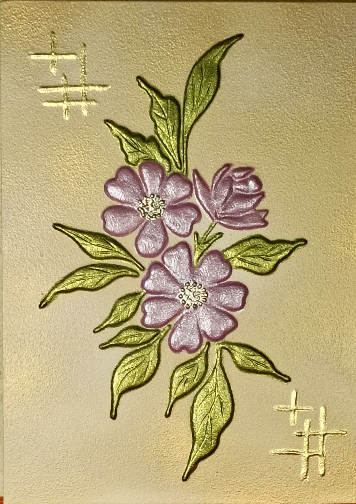

NICOLETA FILIP ART
FLORES SILVESTRES 1
Composición de flores silvestres en tonos rosados y malva, acompañadas por elementos vegetales en relieve.
Sobre la obra
Composición de flores silvestres en tonos rosados y malva, acompañadas por hojas verdes. La disposición de las flores crea un conjunto delicado y natural.
Presentación artística
La obra destaca por el contraste entre los tonos suaves de las flores y los verdes de la vegetación. El relieve aporta volumen a los pétalos y permite que la luz genere diferentes matices sobre la superficie.
Ficha técnica
- Año
- 2026
- Dimensiones
- 23 × 32 cm
- Soporte
- Madera
- Técnica
- Técnica mixta: pasta de relieve y flores en alto relieve
- Categoría
- Floral
Si deseas recibir información sobre esta obra, puedes solicitarla directamente.
SOLICITAR INFORMACIÓN →